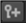

C_ColourMatcher 旨在在钻机中的所有视图中产生基于全局增益的颜色校正，以平衡曝光和白平衡的差异。它解决了所有相机找到所需的最小增益变化，以确保颜色相似性。
注意: C_ColourMatcher 不能补偿不是由曝光或增益类型差异引起的颜色变化。它也不处理伽马或偏移类型的差异。
颜色匹配依赖于解决数据，应该在将解决的相机输出拼接在一起之前执行，因此理想情况下，在 C_CameraSolver 和 C_Stitcher 之间放置 C_ColourMatcher。
|
连接类型 |
连接名称 |
函数 |
|
输入 |
源 |
从 C_CameraSolver 到颜色正确的预览序列。 |
|
控制 (UI) |
旋钮 (脚本) |
默认值 |
函数 |
|
C_ColourMatcher 选项卡 |
|||
|
本地 GPU |
GpuName |
N/A |
显示用于渲染的 GPU 使用 GPU (如果可用) 已启用。本地 GPU 显示 不可用 当: • 使用 CPU 被选中作为 GPU 设备 偏好 . • 在您的系统上找不到合适的 GPU。 • 无法在选定的 GPU 上创建处理上下文，例如当 GPU 上没有足够的可用内存时。 如果可用，您可以通过导航到 偏好 并从中选择一个替代方案 GPU 设备 下拉列表。 注意: 选择不同的 GPU 需要您在更改生效之前重新启动 Nuke。 |
|
使用 GPU (如果可用) |
UseGPUIfAvailable |
已启用 |
启用时，渲染发生在 本地 GPU 指定 (如果可用)，而不是 CPU。GPU 和 CPU 之间的输出在 NVIDIA GPU 上是相同的，但是使用 GPU 可以显著提高处理性能。 核武器 在 2013年底的 Mac Pro 6,1 和 2015年中的 Mac Pro 11,5 上支持 AMD gpu，运行 OS X 10.9.3 “mavericks” 或更高版本。虽然，在某些情况下，GPU 和 CPU 之间的比特级相等保持不变，但对于某些操作，这种配置可能存在精度限制。
注意:
在没有本地 GPU 的情况下启用此选项允许脚本在 GPU 上运行，只要脚本在具有 GPU 可用的机器上打开。
GPU 处理还需要某些 NVIDIA GPU 和 CUDA 驱动程序，或者在 2013年底运行 10.9.3 “mavericks” 或更高版本的 Mac Pro 6,1 和 2015年中 Mac Pro 11,5 的情况下，某些 AMD GPU 和驱动程序。有关最低要求的更多信息，请参考 帮助 > 发行说明 . |
|
输入 |
|||
|
投影 |
InputProjectionType |
默认 (源) |
设置输入投影类型: • 默认 (源) -源输入连接到 C_CameraSolver，并使用图像和元数据对输出进行颜色校正。 • Latlong -源输入连接到已经转换为 latlong 空间的全景。 |
|
键控 |
|||
|
匹配键 |
密钥编号 |
1 |
显示添加到序列中的缝合关键帧的总数。 |
|
密钥计数 |
1 |
显示当前缝合关键帧。 |
|
|
|
N/A |
N/A |
单击可跳转到上一个关键帧。 |
|
|
N/A |
N/A |
单击以跳转到下一个关键帧。 |
|
 |
N/A |
N/A |
单击以在序列的当前帧处添加关键帧。 |
|
|
N/A |
N/A |
单击以删除序列中当前帧处的关键帧。 |
|
步骤 |
KeyStep |
500 |
设置关键帧之间的间隔 全部关键 按钮。 |
|
全部关键 |
AddAllAnalysisKeys |
N/A |
单击以按设置的间隔将关键帧添加到序列中 步骤 控制。 |
|
全部删除 |
DeleteAllAnalysisKeys |
N/A |
单击可从序列中删除所有关键帧。 |
|
导入 |
ImportAllKeys |
N/A |
单击可从当前脚本中的 C_CameraSolver 、 C_ColourMatcher 或 C_Stitcher 节点自动导入现有关键帧。 注意: 导入关键帧将删除任何现有关键帧。 |
|
分析 |
|||
|
匹配 |
匹配类型 |
曝光 |
设置要计算的匹配类型: • 曝光 -计算曝光差异并校正所有相机。 • 曝光和颜色 -计算曝光和颜色差异，并纠正所有相机。 |
|
分析 |
SolveGainCompensation |
N/A |
单击以分析所有摄影机中的选定匹配类型。 |
|
重置 |
删除补偿 |
N/A |
单击删除计算分析。 |
|
输出 |
|||
|
收益 |
增益输出 |
1 |
分析过程完成后，显示每个视图的增益。 |
|
曝光 |
全球曝光 |
0 |
调整所有相机的全局曝光。 |
|
格式 |
输出格式 |
依赖于合成环境 项目设置 |
设置节点树向下传递的输出分辨率。 通常，您可以在 项目设置 ,但此控件覆盖全局设置。 |
|
收敛 |
ConvergenceDepth |
10 |
设置摄像机重叠的深度，允许您将场景中的特定区域聚焦以检查颜色匹配。 |
|
自动 |
AutoConvergenceDepth |
已启用 |
启用时, 收敛 控件由上游元数据自动设置。 禁用时，可以使用 收敛 控件手动调整焦点中的收敛深度。 |
|
出口 |
|||
|
导出菜单 |
ExportMenu |
STMaps (分割) |
设置要添加到节点图中的导出节点: • 等级 (分割) -创建包含计算曝光和颜色差异的单个等级和曝光节点。 • 成绩 (单独) -为包含计算曝光和颜色差异的每个视图创建单独的等级和曝光节点。 • OCIO CDL 变换 (分割) -创建包含计算曝光和颜色差异的单个 OCIOCDLTransform 和曝光节点。 • OCIO CDL 变换 (单独) -为包含计算曝光和颜色差异的每个视图创建单独的 OCIOCDLTransform 和曝光节点。 |
|
创建 |
ExportButton |
N/A |
单击以创建在导出下拉列表中指定的导出。 |
|
Python Tab (这些控件用于 Python 回调，可用于在 Nuke 中发生各种事件时自动调用 Python 函数。) |
|||
|
渲染前 |
BeforeRender |
没有 |
这些函数在 execute () 中开始呈现之前运行。如果它们抛出异常，渲染将中止。 |
|
在每帧之前 |
BeforeFrameRender |
没有 |
这些函数在开始渲染每个帧之前运行。如果它们抛出异常，渲染将中止。 |
|
每帧后 |
AfterFrameRender |
没有 |
这些函数在每个帧完成渲染后运行。如果渲染中止，则不会调用它们。如果它们抛出异常，渲染将中止。 |
|
渲染后 |
AfterRender |
没有 |
这些函数在所有帧的渲染完成后运行。如果它们抛出错误，渲染将中止。 |
|
渲染进度 |
渲染进度 |
没有 |
这些函数在渲染期间运行，以确定进度或失败。 |
|
|